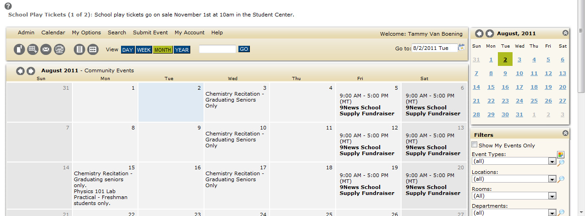
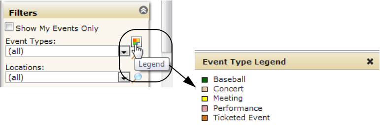

From the calendar display, set filters in the lower right corner.

Note: “Rooms” is the default label for a sub-location. Depending on how your Master Calendar site administrator has configured Master Calendar, you may see this labeled differently, such as “Fields,” “Offices,” and so on.
“Department” is a default label. Depending on how your Master Calendar site administrator has configured Master Calendar, you may see this labeled as something different, such as “Business Units.”
In addition, to view the legend for the events types that are displayed on the calendar, click on the Event Type color key next to the Event Type filter.

Page tags: article:topic